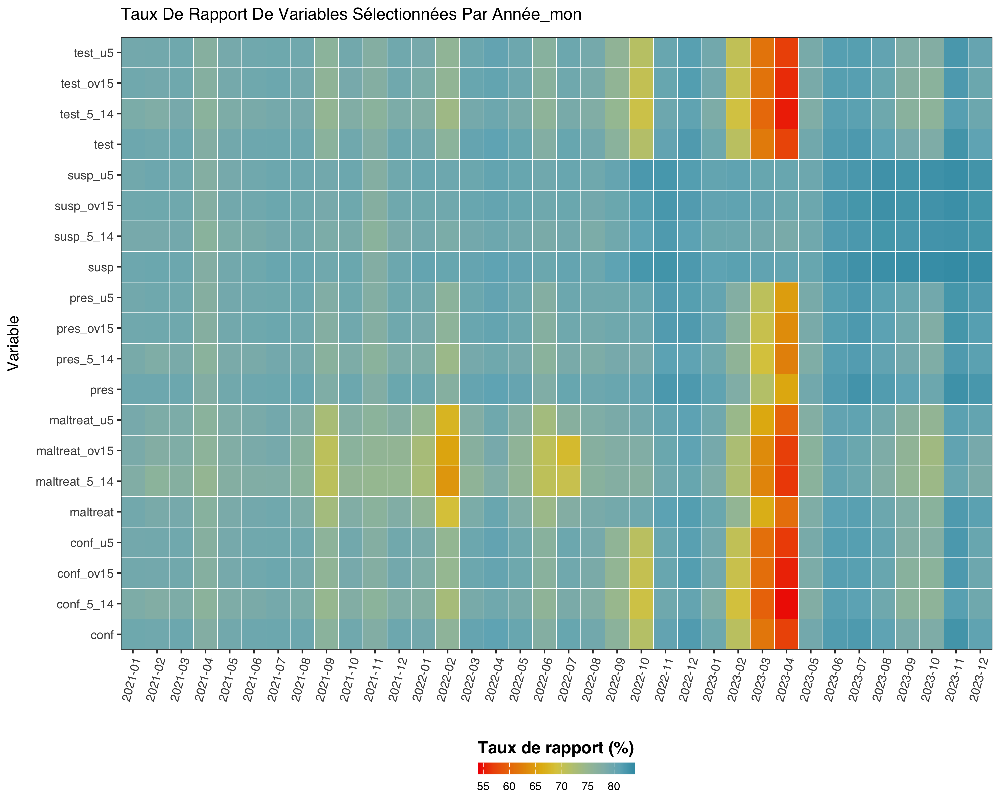
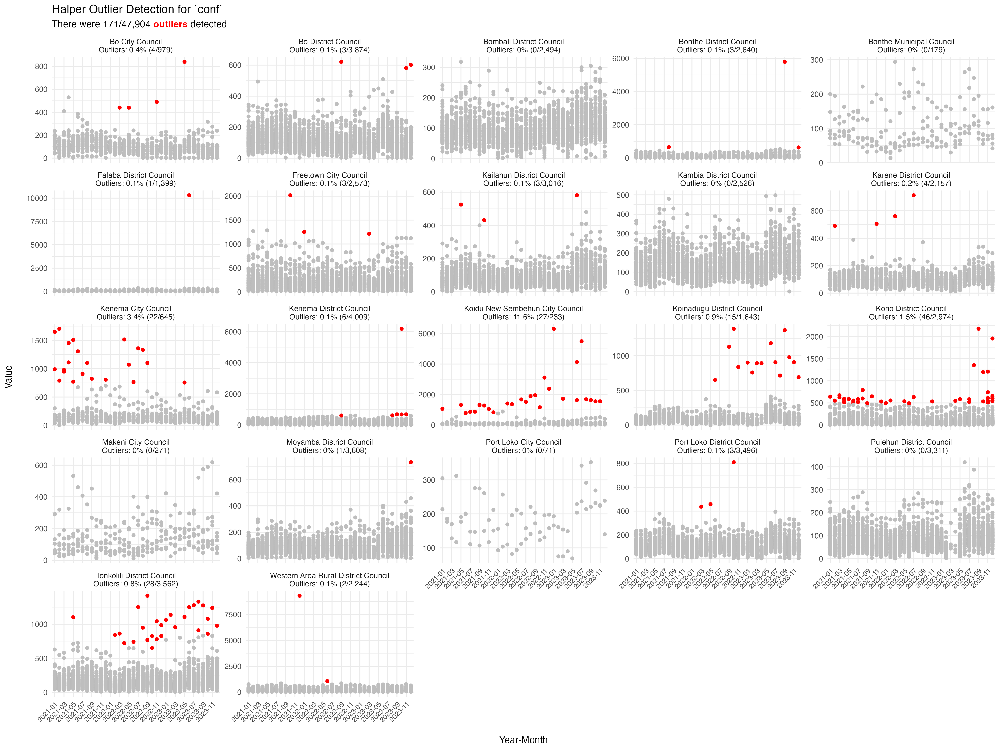
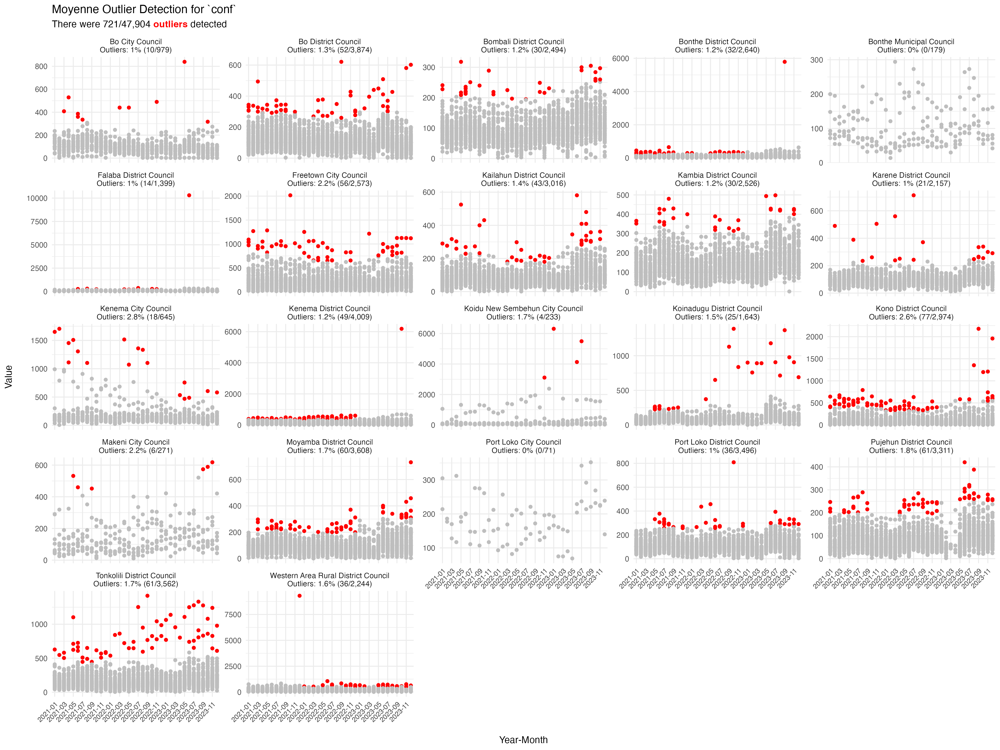

# 1) Install devtools if you haven't already
install.packages("devtools")
# 2) Install the sntutils package from GitHub
devtools::install_github("ahadi-analytics/sntutils")sntutils
What is sntutils?
sntutils is an R package developed by AHADI to support the Subnational Tailoring (SNT) of malaria interventions. It provides utility functions that standardize and streamline data preparation, cleaning, management, visualization, and analysis, facilitating evidence-based decision-making at district level or below. This is an overview of the available functions in this version of sntutils:
| Category | Function | Description |
|---|---|---|
| Data Import/Export | read() |
Reads data from various file formats (CSV, Excel, Stata, RDS, shp) |
write() |
Exports data to various file formats | |
| Download Chirps Data | download_chirps2.0() |
Downloads monthly CHIRPS rainfall rasters for a given region and date range |
| Project Structure | create_data_structure() |
Creates AHADI-style hierarchical data folders under 01_data/ |
initialize_project_structure() |
Sets up full project folder structure with data, scripts, outputs, and reports | |
| Date Handling | autoparse_dates() |
Automatically detects and standardizes various date formats |
available_date_formats |
List of supported date formats for parsing | |
| Geolocation Name Cleaning | prep_geonames() |
Standardizes administrative names across different levels |
| Data Extraction | process_raster_collection() |
Extract values from multiple rasters against ashapefile |
| Reporting Rate Checks | calculate_reporting_metrics() |
Aggregates facility reporting/missing rates over time and space |
reporting_rate_plot() |
Visualizes reporting/missing rates by two variables | |
| Outlier Detection | detect_outliers() |
Flags outliers in a numeric column using mean ± 3 SD, Hampel, and Tukey’s IQR methods |
outlier_plot() |
Generates time‐series plots of flagged outliers (faceted by admin area, colored by method) | |
| Consistency Checks | consistency_check() |
Identifies inconsistencies between two variables in a data vis plotting |
| Translation | translate_text() |
Translates text with persistent file cache |
translate_text_vec() |
Vectorized version of translate_text function |
|
translate_yearmon() |
Converts date to yearmon format with month names in multiple langs | |
| Image Processing | compress_png() |
Reduces PNG file size while maintaining quality |
| Numeric Utilities | big_mark() |
Formats numbers with thousand separators |
sum2() |
Sum with automatic NA removal | |
mean2() |
Mean with automatic NA removal | |
median2() |
Median with automatic NA removal | |
| Hashing Utilities | vdigest() |
Vectorized version of digest::digest function |
:wrench: Installation
The package can be installed using devtools in R. The steps are as follows:
:book: Usage
Data Import and Export
The read() and write() functions provide a simplified interface for importing and exporting data in various formats, inspired by the rio package.
# Load the sntutils package
library(sntutils)
# Import data in various formats
df_csv <- read("path/to/file.csv", sep = ",")
df_excel <- read("path/to/file.xlsx", sheet = 1)
df_excel2 <- read("path/to/file.xls", sheet = 1)
df_stata <- read("path/to/file.dta")
df_spss <- read("path/to/file.sav")
df_rds <- read("path/to/file.rds")
# Import spatial data
sf_geojson <- read("path/to/file.geojson")
sf_shapefile <- read("path/to/file.shp")
# Export data to different formats
write(df, "path/to/export.csv")
write(df, "path/to/export.xlsx")
write(df, "path/to/export.xls")
write(df, "path/to/export.dta")
write(df, "path/to/export.rds")
# Export spatial data
write(sf_data, "path/to/export.shp")
write(sf_data, "path/to/export.geojson")
# Export multiple datasets as sheets in Excel
write(
list(data1 = df1, data2 = df2, data3 = df3),
"path/to/multi_sheet.xlsx"
)Downalod Climate Data (CHIRPS Rainfall)
The download_chirps2.0() function allows you to fetch CHIRPS monthly rainfall raster data for any supported region and time period. It pulls data directly from the UCSB Climate Hazards Group FTP archive and supports automatic unzipping. Only .tif.gz monthly rasters are supported, and the function avoids re-downloading existing files. To view all supported CHIRPS datasets, use chirps_options(). To check the available years and months for a specific CHIRPS dataset (e.g., africa_monthly), use the check_chirps_available() function.
# View available CHIRPS datasets
chirps_options()
#># A tibble: 4 × 4
#> dataset frequency label subdir
#> <chr> <chr> <chr> <chr>
#>1 global_monthly monthly Global (Monthly) global_monthly/tifs
#>2 africa_monthly monthly Africa (Monthly) africa_monthly/tifs
#>3 camer-carib_monthly monthly Caribbean & Central America (Monthly) camer-carib_monthly/tifs
#>4 EAC_monthly monthly East African Community (Monthly) EAC_monthly/tifs
# check available years and months for the africa_monthly
check_chirps_available(dataset_code = "africa_monthly")
#> ✔ africa_monthly: Data available from Jan 1981 to Mar 2025.
#># A tibble: 531 × 4
#> file_name year month dataset
#> <chr> <chr> <chr> <chr>
#> 1 chirps-v2.0.2025.01.tif.gz 2025 01 africa_monthly
#> 2 chirps-v2.0.2025.02.tif.gz 2025 02 africa_monthly
#> 3 chirps-v2.0.2025.03.tif.gz 2025 03 africa_monthly
#> 4 chirps-v2.0.2024.01.tif.gz 2024 01 africa_monthly
#> 5 chirps-v2.0.2024.02.tif.gz 2024 02 africa_monthly
#> 6 chirps-v2.0.2024.03.tif.gz 2024 03 africa_monthly
#> 7 chirps-v2.0.2024.04.tif.gz 2024 04 africa_monthly
#> 8 chirps-v2.0.2024.05.tif.gz 2024 05 africa_monthly
#> 9 chirps-v2.0.2024.06.tif.gz 2024 06 africa_monthly
#>10 chirps-v2.0.2024.07.tif.gz 2024 07 africa_monthly
# Download Africa monthly rainfall for Jan to Mar 2022
download_chirps2.0(
dataset = "africa_monthly",
start = "2022-01",
end = "2022-03",
out_dir = "data/chirps"
)This will download the following files to the data/chirps/ folder (and unzip them if requested):
chirps-v2.0.2022.01.tifchirps-v2.0.2022.02.tifchirps-v2.0.2022.03.tif
Project and Data Folder Structure Utilities
Two functions are provided to help set up a consistent, hierarchical folder structure for SNT projects following AHADI’s recommended layout. Each key data domain in 01_data/ includes two subfolders: raw/ for storing the original, untouched data as received, and processed/ for storing cleaned or transformed versions ready for analysis. This structure is applied consistently across all domains.
create_data_structure()
# Create only the data structure under 01_data/
create_data_structure(base_path = ".")01_data/
├── 1.1_foundational/
│ ├── 1.1a_admin_boundaries/
│ ├── 1.1b_health_facilities/
│ └── 1.1c_population/
│ ├── 1.1ci_national/
│ └── 1.1cii_worldpop_rasters/
├── 1.2_epidemiology/
│ ├── 1.2a_routine_surveillance/
│ ├── 1.2b_pfpr_estimates/
│ └── 1.2c_mortality_estimates/
├── 1.3_interventions/
├── 1.4_drug_efficacy_resistance/
├── 1.5_environment/
│ ├── 1.5a_climate/
│ ├── 1.5b_accessibility/
│ └── 1.5c_land_use/
├── 1.6_health_systems/
│ └── 1.6a_dhs/
├── 1.7_entomology/
├── 1.8_commodities/
02_scripts/
03_outputs/
│ └── plots/
04_reports/
metadata_docs/initialize_project_structure()
Sets up the full AHADI project structure, including organized folders for data, scripts, outputs, reports, and metadata. This structure is purposefully designed to support the full analytical workflow by ensuring that every project component has a clear, dedicated place. This organization makes it straightforward to locate files, reduces confusion, and ensures the project remains traceable, reproducible, and easy to maintain from start to finish.
# Initialize full project structure at specified path
initialize_project_structure(base_path = "my_snt_project")my_snt_project/
├── 01_data/
│ └── [Hierarchical data folders as above]
├── 02_scripts/
├── 03_outputs/
│ └── plots/
├── 04_reports/
└── metadata_docs/Automatic Date Parsing
The autoparse_dates() function parses and standardizes date columns in a data frame, ensuring consistency in date formats. This is particularly useful when working with datasets containing multiple date formats or ambiguous date entries.
# Example with mixed date formats
df <- data.frame(
mixed_dates = c("2023-10-03", "11.09.2022", "25-12-21 23:59", "2020-08-15T00:00:00Z"),
iso8601_dates = c("2021-03-20T00:01:00.513+01:00", "2022-11-05T23:15:59.123Z")
)
# Parse dates to standard format
parsed_df <- autoparse_dates(
data = df,
date_cols = c("mixed_dates", "iso8601_dates"),
output_format = "%Y-%m-%d"
)
parsed_df$mixed_dates
#> [1] "2023-10-03" "2022-09-11" "2021-12-25" "2020-08-15"
parsed_df$iso8601_dates
#> [1] "2021-03-20" "2022-11-05"
# With custom format output
parsed_df <- autoparse_dates(
data = df,
date_cols = c("mixed_dates", "iso8601_dates"),
output_format = "%d/%m/%Y"
)
parsed_df$mixed_dates
#> [1] "03/10/2023" "11/09/2022" "25/12/2021" "15/08/2020"Geolocation Name Cleaning
The prep_geonames() function combines algorithmic matching with user interactivity to clean and standardize administrative names. It uses string distance calculations for initial matching and allows users to make final corrections interactively, with all decisions saved for future use. The function supports a user-provided lookup dataset as a reference or defaults to internal WHO geonames data if no lookup is provided. Additionally, it supports hierarchical stratification across up to six administrative levels. It also caches user decisions to improve consistency and efficiency in subsequent sessions. For users who prefer to run the code without interactivity, the function can be executed with interactive = FALSE.
# Example data with inconsistent admin names
dhis2_dummy <- data.frame(
country = c("ANGOLA", "UGA", "ZAMBIA", "KEN"),
province = c("CABONDA", "TESO", "LUSAKA", "NAIROBY"),
district = c("BALIZE", "BOKEDEA", "RAFUNSA", "KIBRA")
)
# custom lookup data
my_lookup <- data.frame(
country = c("Angola", "Uganda", "Zambia", "Kenya"),
province = c("Cabinda", "Teso", "Lusaka", "Nairobi"),
district = c("Belize", "Bukedea", "Rufunsa", "Kibera")
)
# Harmonize admin names (interactive mode)
cleaned_df <- prep_geonames(
target_df = dhis2_dummy,
lookup_df = my_lookup,
level0 = "country",
level1 = "province",
level2 = "district",
interactive = TRUE
)Here is a short video to demonstrate the full interactivity of prep_geonames:
https://github.com/user-attachments/assets/ffa69a93-a982-43c4-9673-1165f997fd96
CHIRPS Raster Batch Processing
The process_raster_collection() function automates zonal statistics extraction across multiple raster files (e.g., CHIRPS monthly rainfall .tif files). It detects dates from filenames, aligns CRS between rasters and shapefiles, and computes statistics like mean, sum, or median using exact geometry-aware extraction. It returns a tidy data frame indexed by administrative unit and time.
This is especially useful for climate data workflows that require aggregating high-resolution rasters to subnational geographies over time.
# Dummy example — replace with your shapefile and actual raster directory
adm3_shp <- sf::st_read(system.file("extdata", "sle_adm3_example.geojson",
package = "sntutils"))
# Raster files must be named with detectable dates
# (e.g. africa_monthly_chirps-v2.0.2023.05.tif)
# For test purposes, use sample files stored in test fixtures:
raster_dir <- system.file("extdata", "chirps_test_rasters",
package = "sntutils")
# Process rasters and extract mean rainfall
rainfall_df <- sntutils::process_raster_collection(
directory = raster_dir,
shapefile = adm3_shp,
id_cols = c("adm0", "adm1", "adm2", "adm3"),
aggregations = c("mean"),
pattern = "\.tif$"
)
rainfall_df
#> file_name adm1 adm2 adm3 year month mean
#>1 africa_monthly_chirps-v2.0.2020.01.tif EASTERN KAILAHUN DEA 2020 1 12.871692
#>2 africa_monthly_chirps-v2.0.2020.01.tif EASTERN KAILAHUN JAHN 2020 1 9.820749
#>3 africa_monthly_chirps-v2.0.2020.01.tif EASTERN KAILAHUN JAWIE 2020 1 12.042542
#>4 africa_monthly_chirps-v2.0.2020.01.tif EASTERN KAILAHUN KISSI KAMA 2020 1 8.951293
#>5 africa_monthly_chirps-v2.0.2020.01.tif EASTERN KAILAHUN KISSI TENG 2020 1 8.494733
#>6 africa_monthly_chirps-v2.0.2020.01.tif EASTERN KAILAHUN KISSI TONGI 2020 1 9.013873
#>7 africa_monthly_chirps-v2.0.2020.01.tif EASTERN KAILAHUN KPEJE BONGRE 2020 1 10.587007
#>8 africa_monthly_chirps-v2.0.2020.01.tif EASTERN KAILAHUN KPEJE WEST 2020 1 9.824939
#>9 africa_monthly_chirps-v2.0.2020.01.tif EASTERN KAILAHUN LUAWA 2020 1 11.760721
#>10 africa_monthly_chirps-v2.0.2020.01.tif EASTERN KAILAHUN MALEMA 2020 1 13.839043Aggregating Reporting Rate
The sntutils::calculate_reporting_metrics() function calculates the completeness of routine health data reporting. It evaluates whether health facilities have submitted valid data for a defined set of indicators (vars_of_interest) over time. By default, it treats both NA and zero values as non-reporting (if na_to_zero = TRUE, which is the defaut).
Scenario 1: Facility-Level Reporting/Missing Rate
This scenario calculates the proportion of active facilities that reported any data (across a specified set of variables) for each time-unit and geographic group (e.g. year-month by district).
A facility is counted as reporting (\(r\)) in a given year-month if any of the selected vars_of_interest is non-missing. It is included in the denominator (\(e\)) for a given year-month only if it had first reported on any of the key_indicators at or before that year-month. This ensures facilities are only expected to report after becoming active.
Formula
Let:
- \(a\) = administrative unit (e.g. district, LGA, region)
- \(t\) = time period (e.g. year-month, such as “2022-03”)
- \(f\) = a health facility in administrative unit \(a\)
key_indicators= a set of variables used to determine whether a facility is active e.g. “test”, “treat”, “conf”, “pres”, “allout”vars_of_interest= variables used to determine if a facility has reported during a given time period e.g. “conf”, “pres”
For each administrative unit \(a\) and time period \(t\), the reporting rate is:
\[ \text{Reporting Rate}_{a,t} = \frac{o_{a,t}}{e_{a,t}} \times 100 \] Where:
- \(o_{a,t}\) (observed) = number of facilities in \(a\) that reported any value in
vars_of_interestduring \(t\) - \(e_{a,t}\) (expected) = number of facilities in \(a\) whose first-ever report on any
key_indicatorsoccurred on or before \(t\) (i.e. expected to report)
This filtering avoids overestimating non-reporting rates by excluding newly opened or late-starting facilities from the denominator in earlier periods.
Worked example
Suppose we are calculating the reporting rate for district \(d\) in March.
Let:
- \(K\) be the set of key indicators (
key_indicators) - \(v\) be the variable of interest (
vars_of_interest) (e.g., “conf”)
Observed data:
- 6 facilities in total
- 6 facilities have reported at least once on any \(k \in K\) on or before March
- 4 of those 6 reported on variable \(v = \text{conf}\) in March
\[ \text{Reporting Rate}_{d,\text{Mar}} = \frac{4}{6} \times 100 = 66.7\% \]
Now to implement this in code:
# Example data with inconsistent admin names
sl_dhis2 <- readRDS("inst/extdata/sl_exmaple_dhis2.rds") |>
dplyr::rename(year_mon = date) |>
dplyr::filter(year_mon >= "2020.01") |>
dplyr::mutate(
# Generate consistent HF IDs
hf_uid = sntutils::vdigest(
paste0(adm1, adm2, hf),
algo = "xxhash32"
),
# Generate consistent HF-date IDs
record_id = sntutils::vdigest(
paste(hf_uid, year_mon),
algo = "xxhash32"
)
)
# Calculate monthly reporting rates by district
calculate_reporting_metrics(
data = sl_dhis2,
vars_of_interest = c("conf", "pres"), # Variables to check if a facility reported
x_var = "date", # Temporal unit: year-month
y_var = "adm2", # Spatial unit: district
hf_col = "hf_uid", # Health facility ID column
key_indicators = c( # Used to determine denominator
"allout", "test", "treat",
"conf", "pres"),
na_to_zero = TRUE # Zeros treated as missing (non-reporting)
) # this is the default
Attaching package: 'sntutils'The following object is masked from 'package:base':
write# A tibble: 6 × 6
year_mon adm2 rep exp reprate missrate
<chr> <chr> <int> <int> <dbl> <dbl>
1 2023-11 Bombali District Council 74 74 100 0
2 2023-11 Makeni City Council 8 9 88.9 11.1
3 2023-12 Bo City Council 29 32 90.6 9.38
4 2023-12 Bo District Council 122 124 98.4 1.61
5 2023-12 Bombali District Council 71 74 95.9 4.05
6 2023-12 Makeni City Council 8 9 88.9 11.1 Scenario 2: Reporting/Missing Rate by Two Dimensions
This scenario calculates the frequency of valid (non-missing, non-zero) reports across two grouping variables (e.g., time period and location) for specified variables of interest:
# Calculate reporting rates by date and district
calculate_reporting_metrics(
data = sl_dhis2,
vars_of_interest = c("conf", "pres"), # Confirmed and presumptive malaria cases
x_var = "date", # Time dimension
y_var = "adm2" # Geographic dimension
)# A tibble: 6 × 7
year_mon adm2 variable exp rep reprate missrate
<chr> <chr> <chr> <int> <int> <dbl> <dbl>
1 2021-01 Bo City Council conf 39 28 71.8 28.2
2 2021-01 Bo City Council pres 39 5 12.8 87.2
3 2021-01 Bo District Council conf 129 113 87.6 12.4
4 2021-01 Bo District Council pres 129 7 5.43 94.6
5 2021-01 Bombali District Council conf 81 73 90.1 9.88
6 2021-01 Bombali District Council pres 81 10 12.3 87.7 Scenario 3: Reporting/Missing Rates Over Time
This scenario calculates reporting data rates along one key dimension—typically time, making it useful for identifying when different variables are reported and spotting gaps over time.
# Evaluate reporting completeness over time
calculate_reporting_metrics(
data = sl_dhis2,
vars_of_interest = c("conf", "pres", "test"), # Key indicators
x_var = "year_mon" # Time dimension only
)# A tibble: 6 × 6
year_mon variable exp rep reprate missrate
<chr> <chr> <int> <int> <dbl> <dbl>
1 2021-01 conf 269 222 82.5 17.5
2 2021-01 pres 269 23 8.55 91.4
3 2021-01 test 269 222 82.5 17.5
4 2021-02 conf 269 218 81.0 19.0
5 2021-02 pres 269 26 9.67 90.3
6 2021-02 test 269 218 81.0 19.0Reporting Rate Plots
The reporting_rate_plot() function plots the reporting rates for health facility data, making it easy to identify patterns, gaps, and trends in data completeness across time and geographic areas. This visualization function works with health facility data, using calculate_reporting_metrics() internally to support all three reporting scenarios discussed above.
Scenario 1: Facility-Level Reporting/Missing Rate
reporting_rate_plot(
data = sl_dhis2,
vars_of_interest = "conf", # Variables to check if a facility reported
x_var = "year_mon", # Temporal unit: year-month
y_var = "adm3", # Spatial unit: adm3
hf_col = "hf_uid", # Health facility ID column
key_indicators = c( # Used to determine denominator
"allout", "test", "treat",
"conf", "pres"),
na_to_zero = TRUE # Zeros treated as missing (non-reporting)
) # this is the default
Scenario 2: Reporting/Missing Rate by Two Dimensions
reporting_rate_plot(
data = sl_dhis2,
vars_of_interest = "conf", # Variables to check if a facility reported
x_var = "year_mon", # Temporal unit: year-month
y_var = "adm3", # Spatial unit: adm3
target_language = "fr" # This time we translate it to French
)
Scenario 3: Reporting/Missing Rates Over Time
# get the variables of interest
vars <- c("conf", "test", "pres", "allout",
"maladm", "maldth", "maltreat", "allout_u5",
"allout_ov5", "maladm_u5", "maladm_5_14",
"maldth_u5", "maldth_5_14", "maldth_ov15")
reporting_rate_plot(
sl_dhis2,
vars_of_interest = vars, # Variables to check if reported overtime
x_var = "year_mon", # Temporal unit: year-month
target_language = "fr" # This time we translate it to French
)
The consistency_check() function identifies and visualizes inconsistencies between two variables such as the test and confirmed cases, useful for data quality assessment.
# Check consistency between tests and cases
consistency_check(
sl_dhis2,
tests = c("test"),
cases = c("conf")
)
# save the plot
consistency_check(
sl_dhis2,
tests = c("test"),
cases = c("conf")
save_plot = TRUE,
plot_path = "plots/consistency_check_plots"
)
# with translated labels in (French)
consistency_check(
sl_dhis2,
tests = c("test"),
cases = c("conf"),
target_language = "fr"
)
Outlier Detection
The detect_outliers() function helps identify unusual values in numeric variables using three complementary statistical methods:
- Mean ± 3 SD (parametric approach)
- Hampel Identifier (median ± 15 × MAD, robust to extreme values)
- Tukey’s Fences (based on IQR, with adjustable sensitivity)
Outliers are assessed within groups defined by administrative area (adm1, adm2), health facility, and year. This grouping ensures context-sensitive detection, especially for health data varying by region and time.
The function returns a data frame with the record ID, the variable of interest, and whether each method flags the value as an outlier. It also includes bounds used by each method for transparency.
outlier_results <- detect_outliers(
data = sl_dhis2,
column = "conf", # The var to check for outliers
yearmon = "year_mon", # Column showing the time like year and month
record_id = "record_id", # Unique row ID
adm1 = "adm1", # First-level admin area (e.g. region)
adm2 = "adm2", # Second-level admin area (e.g. district)
iqr_multiplier = 2 # Controls how strict the outlier check is for IQR test
)The detect_outliers() function returns a table with outlier results for each row in your dataset. The key columns of interest are record_id, the value being checked, and the method-specific flags: outliers_iqr, outliers_halper, and outliers_moyenne. Each method marks the value as either “outlier” or “normal value”. You can join this output back to your original data using record_id to flag values for review or action.
outlier_results |>
dplyr::select(
record_id, value,
outliers_iqr,
outliers_halper,
outliers_moyenne) |>
tail()# A tibble: 6 × 5
record_id value outliers_iqr outliers_halper outliers_moyenne
<chr> <dbl> <chr> <chr> <chr>
1 2573978d 219 normal value normal value normal value
2 08df1617 103 normal value normal value normal value
3 6eb8f58e 109 normal value normal value normal value
4 cb1d87c7 108 normal value normal value normal value
5 7edb097b 172 normal value normal value normal value
6 0cc05afb 151 normal value normal value normal value Visualise Outliers
The outlier_plot() function builds on detect_outliers() to generate time series plots that help visualize where and when outliers occur in your data. Each method returns a separate ggplot object, with points colored by whether they were flagged as “outlier” or “normal value”. The plots are faceted by district (adm2), and facet labels summarize the percentage of outliers in each group.
# Generate the outlier plots
plots <- sntutils::outlier_plot(
data = sl_dhis2,
column = "conf",
record_id = "record_id",
adm1 = "adm1",
adm2 = "adm2",
yearmon = "year_mon",
methods = c("iqr", "halper", "moyenne")
)IQR method
plots$iqr
Halper method
plots$halper
Moyenne method
plots$moyenne
Image Compression
In cases where output file size—such as for PDFs or Word documents—becomes a concern, compressing images can significantly reduce size without noticeably affecting quality. The compress_png() function helps with this by reducing PNG file sizes while preserving visual fidelity.
Both reporting_rate_plot() and consistency_check() include built-in support for image compression during saving. Additionally, users can manually compress individual PNGs or entire folders using compress_png():
# Compress a single PNG file
compress_png(
"path/to/large_image.png",
output_path = "path/to/consistency_plot.png"
)
#> ── Compression Summary ──
#>
#> ✔ Successfully compressed: consistency_plot.png
#> ℹ Total compression: 200.21 KB (71.54% saved)
#> ℹ Excellent compression!
#>
#> ── File Size
#> Before compression: 279.87 KB
#> After compression: 79.66 KB
# Compress all PNGs in a directory
compress_png(
"path/to/image_folder/",
output_path = "path/to/compressed_folder/"
verbose = TRUE
)Text Translation with Caching
The translate_text() function uses Google Translate API through the gtranslate package and implements a sophisticated caching system to improve efficiency and consistency for future usage:
# Translate a single text from English to French
translate_text("Reporting rate by district",
target_language = "fr",
source_language = "en")
#> "Taux de rapportage par district"
# Translate with custom cache location
translate_text("Malaria cases",
target_language = "pt", # Portuguese
cache_path = "~/translation_cache")
#> "Casos de malária"For bulk translation of multiple strings, the vectorized version translate_text_vec() offers better performance and works easily with data frames when used in a piped workflow:
library(dplyr)
df <- tibble::tibble(
label = c("Confirmed cases", "Presumed cases", "Tests performed")
)
df |>
dplyr::mutate(label_es = translate_text_vec(label, target_language = "es"))# A tibble: 3 × 2
label label_es
<chr> <chr>
1 Confirmed cases Casos confirmados
2 Presumed cases Casos presuntos
3 Tests performed Pruebas realizadasWhen working with time series data, properly formatting dates in the local language improves report readability. The translated_yearmon() function supports this by using locale-aware month-year formatting:
# Convert dates to localized month-year format
dates <- seq(as.Date("2022-01-01"), as.Date("2022-03-01"), by = "month")
# French localized dates
translated_yearmon(dates, language = "fr")
#> [1] "janv. 2022" "févr. 2022" "mars 2022"
# Full month names in Spanish
translated_yearmon(dates, language = "es", format = "%B %Y")
#> [1] "enero 2022" "febrero 2022" "marzo 2022"These translation functions are integrated throughout the package, allowing functions like reporting_rate_plot() and consistency_check() to generate outputs in the users preferred language through their target_language parameter.
Numeric Formatting
Several helper functions make working with numeric data easier:
# Format numbers with thousands separator
big_mark(1234567.89)
#> [1] "1,234,567.89"
big_mark(c(1234.56, 7890123.45), decimals = 1, big_mark = " ")
#> [1] "1 234.6" "7 890 123.5"
# NA-safe numeric functions
sum2(c(1, 2, NA, 4)) # Sum with automatic NA removal
#> [1] 7
mean2(c(1, 2, NA, 4)) # Mean with automatic NA removal
#> [1] 2.333333
median2(c(1, 2, NA, 4, 5)) # Median with automatic NA removal
#> [1] 3Vectorized Digest for Efficient Data Hashing
The vdigest() function provides a vectorized implementation of the digest::digest() function, making it efficient to generate hash values for entire columns or vectors in a data frame. This is particularly useful for creating unique identifiers, tracking data changes, or anonymizing sensitive information.
sl_dhis2 |>
dplyr::distinct(adm3) |>
dplyr::mutate(
# Hash personal identifiers
adm3_hash = vdigest(adm3)
) |> head()# A tibble: 6 × 2
adm3 adm3_hash
<chr> <chr>
1 Bo City c810b59ec12efb2ac8b5cc84f46857ce
2 Kakua Chiefdom 27fd84f751fac150c2f8a8f42b71c3da
3 Baoma Chiefdom 462ef3c87dc9b40b2ec2e0e0a54dd63e
4 Valunia Chiefdom df394518e6987ed686d76e83a409f090
5 Bagbwe Chiefdom 3aa7a61247e34ab397ff813fe520c8b7
6 Wonde Chiefdom 196dc9792e2038b41411ec2afae37e61:handshake: Contribution
Contributions to sntutils are welcome! Please feel free to submit issues or pull requests on our GitHub repository.
License
This package is licensed under CC BY 4.0.